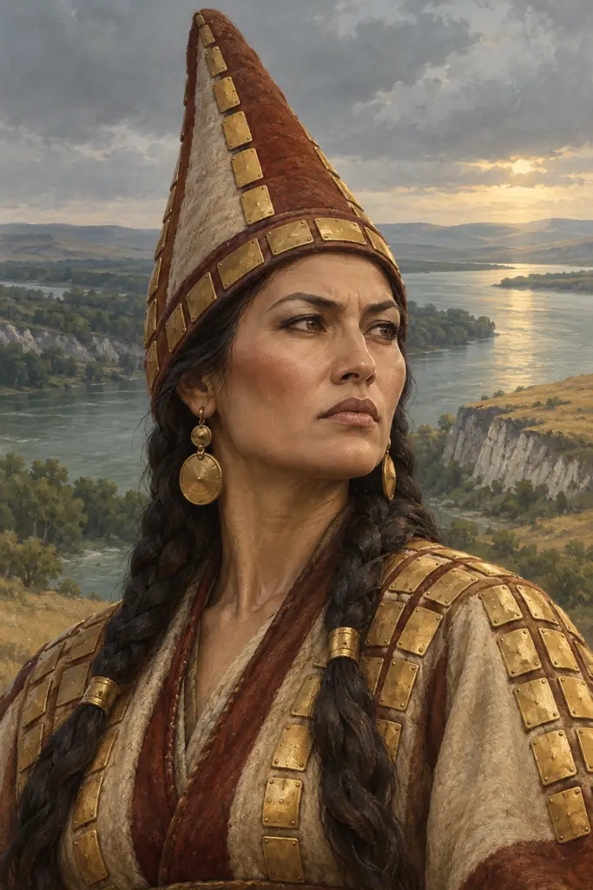
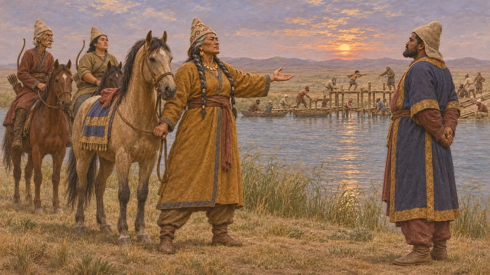
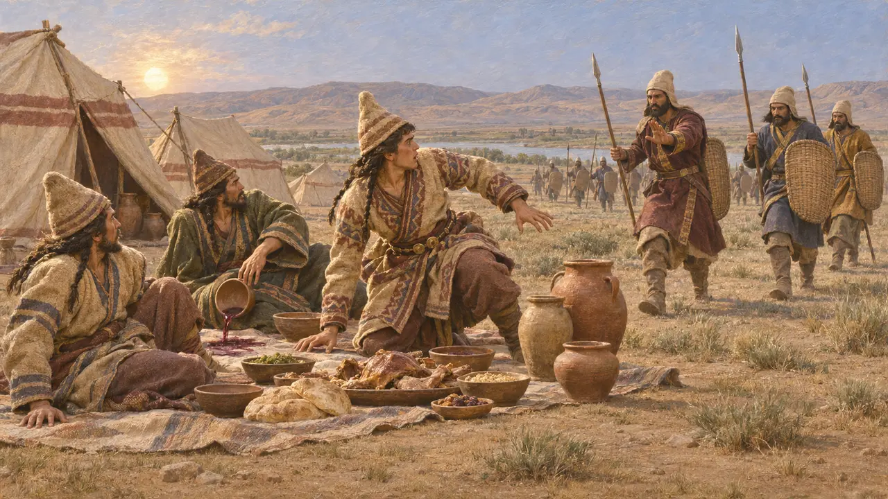
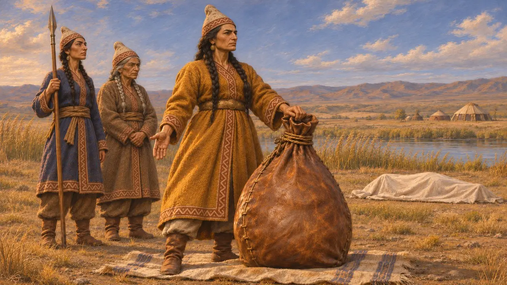
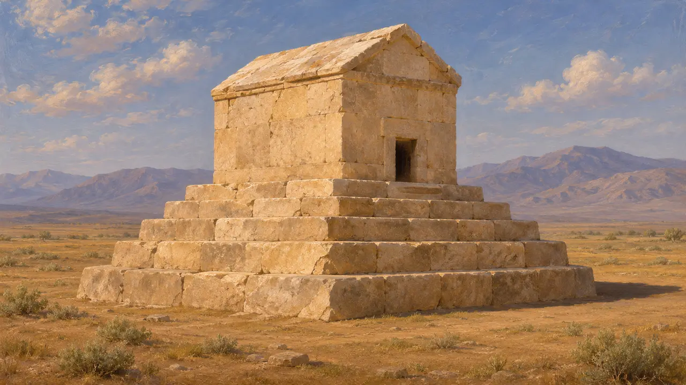

托米丽斯是马萨格泰人的女王，这是一支生活在里海以东的游牧民族。据希罗多德记载，居鲁士大帝于公元前530年入侵她的国土，兵败身死，她随后对居鲁士的遗体施以残酷的报复。波斯史料中从未提及她，其他希腊作家对居鲁士之死也各有不同说法。后世关于她的故事，如查士丁的记述，皆沿袭希罗多德。
游戏中： 游戏的编年史称托米丽斯就是希罗多德所说于公元前530年杀死居鲁士的女王，并注明其他记载有所不同。这是对史料的公允概括。

阿拉克塞斯河彼岸的寡居女王
古代记述希罗多德记载，托米丽斯在丈夫死后统治马萨革泰人。这是一个居住在他称为阿拉克塞斯河彼岸的骑马民族。居鲁士起初向她求婚，但她看出居鲁士觊觎的是她的王国，便拒绝了。当居鲁士开始在河上架桥时，她提出可在任一岸交战：要么她后撤三日路程，让他渡河；要么由她渡河过来。
Herodotus 1.201-206, 1.215

宴席之计与交战
古代记述据希罗多德记载，居鲁士采纳了克罗伊斯的计策：渡过河去，留下一座由老弱兵卒驻守、备有酒食的营地，然后后撤。三分之一的马萨格泰人在女王之子斯帕尔伽披赛斯率领下夺取了营地，大肆宴饮，醉酒后被一举击溃。斯帕尔伽披赛斯后来在囚禁中自尽。在随后的决战中——希罗多德称之为非希腊人之间最惨烈的一战——波斯大军大半阵亡，居鲁士也战死沙场。
Herodotus 1.207-214

酒囊中的头颅
后世传说希罗多德以托米丽斯在死者中寻找居鲁士的尸体为这个故事作结。她将他的头颅塞进一只盛满人血的皮囊，并对他说，她要让他饮够他所渴求的鲜血。这一幕呼应了她先前对他的警告，读来宛如一则讽喻征服者贪婪的道德故事。希罗多德说，关于居鲁士之死他听过许多说法，而他选择了其中最可信的一种。
Herodotus 1.212-214
居鲁士之死的其他记载
争夺中克特西亚斯是约公元前400年供职于波斯宫廷的希腊医生，他说居鲁士在与德尔比克人作战时负伤，三天后去世。色诺芬则记载他在波斯安然辞世，临终前还训诫了几个儿子。查士丁在晚得多的时代为特罗古斯所作的拉丁文节本保留了托米丽斯的故事，并添加了新的细节。史家大多认为居鲁士很可能死于中亚的征战途中，但他的敌人究竟是谁、阿拉克塞斯河究竟是哪条河，至今仍无定论。
Ctesias, Persica, in Photius, Bibliotheca 72; Xenophon, Cyropaedia 8.7; Justin, Epitome of Pompeius Trogus 1.8; P. Briant, From Cyrus to Alexander, 2002

史料所证实之事
见于史载巴比伦文书以国王的在位年份纪年，显示居鲁士的统治于公元前530年结束，而冈比西斯在夏末之前已被承认为国王。当时的文献中没有一篇提到托米丽斯或与马萨格泰人的战争，因此关于居鲁士死于何处、为何人所杀的细节，全凭希腊作家的记载。帕萨尔加德那座通常被认定为居鲁士陵的石墓至今犹存，但在近代被发现时已是空墓。
R. A. Parker and W. H. Dubberstein, Babylonian Chronology 626 BC-AD 75, 1956; D. Stronach, Pasargadae, 1978
来源
- Herodotus 1.201-216
- Ctesias, Persica, in Photius, Bibliotheca 72
- Xenophon, Cyropaedia 8.7
- P. Briant, From Cyrus to Alexander, 2002
- R. A. Parker and W. H. Dubberstein, Babylonian Chronology 626 BC-AD 75, 1956
- D. Stronach, Pasargadae, 1978